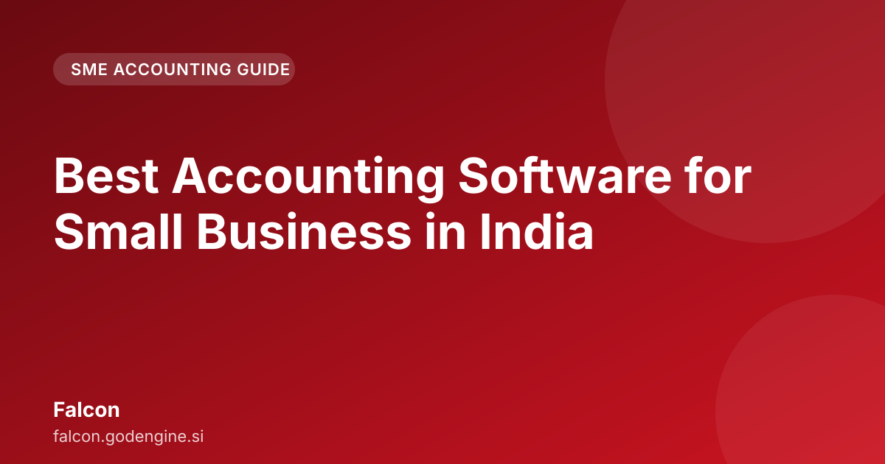

Best Accounting Software for Small Business in India

The best accounting software for small business in India is crucial for business survival, not just bookkeeping. Many Indian SMEs struggle because generic software fails to handle the unique complexities of Indian tax laws, connectivity issues, and the need for accurate double-entry bookkeeping. This guide outlines what modern Indian business finance requires.
Traditional accounting tools often are too basic or rely on constant internet access. For a small business owner in a Tier 2 or Tier 3 city, or during a power cut, an online-only system presents a liability.
Traditional software frequently treats GST and TDS as optional features rather than core functions. This necessitates manual reconciliation, which increases the risk of errors. For example, when issuing an invoice for goods worth ₹50,000 in Maharashtra, the software must automatically calculate the correct CGST (2.5%) and SGST (2.5%) based on state registration. Manual calculation is prone to human error, which can lead to penalties from the GST department.
Another critical failure point is the connectivity gap. If a business operates offline for extended periods—a common occurrence in India—and the software does not allow for local transaction input, invoice generation, and maintenance of a complete double-entry ledger, the business operations are effectively halted.
When searching for accounting software for small business india, look beyond features like "Expense Tracking" or "Invoicing." A serious SME owner or accountant must demand a system built around Indian regulatory requirements.
Key requirements include:
- GST Compliance: The system must handle HSN/SAC codes, automatic tax calculation (CGST/SGST/IGST), and generate GSTR-1 and GSTR-3B data accurately.
- Double-Entry Bookkeeping: Every transaction must correctly debit and credit the appropriate accounts. This is the foundation of accurate financial statements.
- Offline Capability: The software must function perfectly without a stable, high-speed internet connection. Data must sync upon restoration of connectivity.
- TDS Management: It needs to track TDS deducted on payments (such as professional fees or rent) and assist in preparing necessary TDS challans and reports.
- Scalability: The system should support growth from simple sales tracking to managing complex inventory and payroll.
Falcon addresses Indian SME accounting challenges by prioritizing offline functionality and double-entry accuracy. A system designed for the Indian market understands that connectivity is not guaranteed, but compliance is mandatory.
Falcon operates on an offline-first principle. Users can record sales, issue GST-compliant invoices, and post the double-entry journal entry even if the internet fails mid-day. Data is securely stored locally. Upon regaining connectivity, the data sync ensures records remain current for filing.
The core strength of Falcon is its adherence to double-entry bookkeeping. When a sale of ₹10,000 is recorded, the system automatically debits Accounts Receivable (Debtor) and credits Sales Revenue, while simultaneously calculating and recording the liability for GST (Output Tax Payable). This automated, accurate ledger maintenance distinguishes professional accounting from amateur bookkeeping.
The practical difference between manual entry and automated processes is significant.
Scenario: Paying a Consultant ₹20,000 for Services with 10% TDS
Manual Process:
- Calculate TDS: ₹20,000 \* 10% = ₹2,000.
- Pay the consultant: ₹18,000.
- Record the payment in the ledger.
- Manually create a TDS payment voucher for ₹2,000.
- Manually file the TDS return and generate required certificates for the consultant.
Automated Process (Using GST Compliant Accounting Software India):
- Enter the payment of ₹20,000 against the service bill.
- The software prompts for the TDS rate (10%).
- It automatically calculates the deduction (₹2,000) and the net payment (₹18,000).
- It creates the necessary journal entries for both the expense and the tax liability.
- The ₹2,000 is flagged in the TDS report for payment, streamlining the filing process.
This automation saves time and mitigates the risk of under-deduction, which incurs interest penalties from the government.
While many tools claim GST compliance, compliance exists on a spectrum. Some handle basic invoicing; others manage full GSTR reconciliation.
| Feature | Generic/Basic Software | Specialized Software (e.g., Falcon) | SME Impact |
|---|---|---|---|
| Connectivity | Cloud-only (Requires stable internet) | Offline-First with Cloud Sync | Ensures business continuity during power cuts/poor network. |
| Bookkeeping | Simple Ledger/Cash Basis | Full Double-Entry System | Provides accurate financial statements for audits and loans. |
| GST Handling | Basic Tax Calculation | Full GSTR Data Mapping & Reconciliation | Reduces filing errors and potential penalties. |
| TDS | Manual Tracking | Automated Calculation & Reporting | Ensures timely tax remittance and compliance. |
If current software requires switching between an invoice generator, a ledger, and a separate GST calculator, it is not a unified accounting solution.
Business needs evolve with growth.
Stage 1: Startup/Micro Business (Turnover < ₹10 Lakhs)
- Need: Simple invoicing, basic expense tracking, and GST invoice generation.
- Focus: Ease of use and mobile accessibility.
Stage 2: Growing SME (Turnover ₹10 Lakh to ₹5 Crore)
- Need: Inventory management, automated double-entry, TDS tracking, and robust GST reporting.
- Focus: Compliance automation and data integrity.
Stage 3: Established Business (Turnover > ₹5 Crore)
- Need: Multi-branch support, advanced payroll integration, and complex financial analysis.
- Focus: Scalability and ERP integration.
For most SMEs in Stage 2, the gap between basic invoicing and full compliance is where businesses fail. Dedicated accounting software for small business india addresses this gap.
Stop using spreadsheets and manual calculations. If you require a system that respects the realities of Indian business—where power may fail, but compliance cannot—you need an offline-first, double-entry powerhouse.
Falcon is designed for this environment. It manages GST and TDS complexity internally, allowing focus on business operations rather than tax codes.
Review how Falcon can streamline operations: Try Falcon
Choosing the right accounting software for small business india is not about finding the cheapest option; it is about finding the most reliable partner for compliance and operational uptime. Prioritizing offline capability, rigorous double-entry bookkeeping, and deep integration of GST and TDS rules shifts management from reactive accounting to proactive financial management.
Further reading across our network: Decision Intelligence: De-Risking $10M+ Bets · GodEngine
Frequently asked questions
Does accounting software for small business in India need to work offline?
Yes, especially in semi-urban or rural areas where internet connectivity is unreliable. Falcon is built with an offline-first architecture to ensure your books are never stuck due to poor connectivity.
How does Falcon handle GST compliance for small businesses?
Falcon automates the entire GST workflow—from invoice generation adhering to Indian formats to real-time reconciliation and preparation for filing, ensuring accuracy and reducing compliance risk.
Is Falcon suitable for accountants who require strict double-entry integrity?
Absolutely. Falcon is designed around robust double-entry bookkeeping principles, providing accountants with the necessary audit trails and financial integrity that simple ledger apps lack.
What makes accounting software for small business India unique?
It must handle Indian tax complexities like CGST/SGST/IGST, manage TDS accurately, and function reliably even with poor internet connectivity.
Is offline capability important for Indian SMEs?
Yes, it is crucial. An offline-first system allows you to record transactions and maintain your double-entry ledger without constant high-speed internet access.
How does good accounting software handle GST?
It must automate tax calculations based on HSN/SAC codes and accurately generate necessary reports like GSTR-1 and GSTR-3B to prevent penalties.